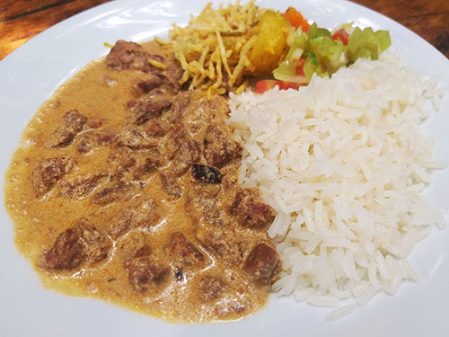

Strogonoff de Carne
Um strogonoff de carne cremoso, simples e delicioso. Perfeito para um almoço de domingo ou um jantar rápido durante a semana.
Tempo
40 minutos
Porções
4 pessoas
Dificuldade
Fácil
Ingredientes
- 500g de carne
- 1 cebola média
- 2 dentes de alho
- 3 colheres de sopa de azeite
- 1 caixa de creme de leite
- 2 colheres de sopa de mostarda
- 2 colheres de sopa de ketchup
- Sal e pimenta-do-reino a gosto
- 100g de cogumelos fatiados
Modo de preparo
- Em uma panela grande, aqueça o azeite e doure a cebola e o alho. Adicione a carne em tiras e frite até dourar.
- Tempere com sal e pimenta. Adicione o molho de tomate, o ketchup e a mostarda.
- Acrescente os cogumelos fatiados e misture suavemente.
- Desligue o fogo e adicione o creme de leite. Misture até ficar homogêneo e cremoso.
Sugestões de Acompanhamento
- Arroz branco
- Batata palha